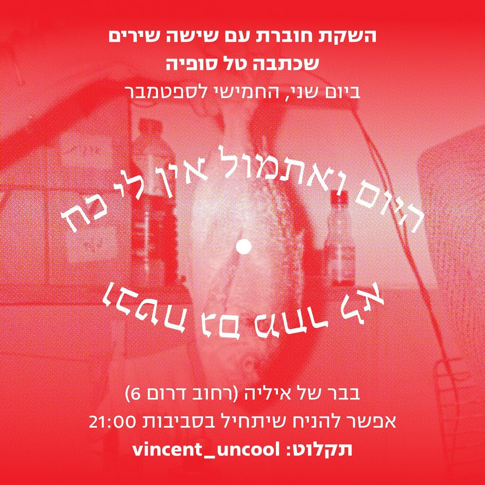

אירוע מפסטיבל "שאון חורף" 2022 בשמורה. צילום: איתמר גינזבורג
השמורה הוקמה על ידי איליה שעבדה כברמנית במקומות שונים, והבינה שחיי הלילה זה התחום שלה, שתוכל להתקיים בו ולהחזיק בעבודה בו. היא לא הייתה מעוניינת להתחיל עבודה חדשה כשכירה ולהתחיל את התהליך שוב מלמטה, אך תהתה אם היא יכולה לייצר משהו מאפס ולתת זוית יחודית משלה על התחום. האם היא יכולה לייצר חזון למקום ביחד עם הצורך בעבודה יציבה. היא הקימה את המקום בדצמבר 2019 והפתיחה הייתה אמורה להיות במרץ 2020 אך לא התקיימה בגלל הסגר הראשון של מגפת הקורונה. בסוף הפתיחה קרתה בין הסגר הראשון והשני, אך המקום לא פעל ברצף בגלל קשיי המגפה, ובשנה וחצי הראשונות פעל בסך הכל כחודש וחצי במצטבר. לאחר מכן הבר מתקיים כבר שנתיים ברצף. בהתחלה היא עבדה לבד, והיו ימים של חרדה שבהם לא יכלה לבוא לעבוד, ואחרי כמה חודשים היה בלתי נמנע שתביא לעוד כמה אנשים לעבוד, גם אם זה היה קשה כלכלית בתחילה.
היא רואה במקום בר שכונתי, באופן הכי טוב של המילה. כאדם שחי בעיר וצרך את התרבות הזאת חשוב לה שירושלים תהיה עשירה באלטרנטיבות, ושכל אחד ואחת יוכלו למצוא את המקום שנעים להם לשבת בו. האופי או האישיות של הבר מושפעים ברובו מהאישיות של איליה: הבובות על מדפים סביב הבר הן האסתטיקה שלה, הציורים על הקירות – שיהיה לאנשים משהו להסתכל עליו שהוא לא טלוויזיה ויוכלו לשאול שאלות, והאנרגיה של המקום שנשארת יחסית מאוזנת, כולל המוזיקה שאמורה להתאים ולהיות נכונה למה שקורה בחלל, בווליום שמאפשר לשמוע אחד את השני. כמות הכיסאות מתאימה למה שברמן אחד יכול לשרת, כחלק מעיקרון של להתפרנס ולא לגדול מעבר, כי דבר כזה יכול להרוס את החוויה של המקום.
האנשים הם חלק מהאווירה הזאת. כמו בכל עיר וכל סצנה יש אנשים עם מעגלים חברתיים מרובים והם מביאים איתם עוד אנשים. איליה פועלת בעולם הזה של הלילה במובן כזה או אחר כבר מספר שנים, והיא אוהבת את האנשים שהם חלק ממנו. האנשים שפועלים, מפעילים ויוצרים דברים בעולם הזה זה לא דבר מובן מאליו; עבורה חלקם חברים קרובים וחלקם אנשים שהיא מעריכה. כמו שם המקום, שמורה, מטרתה היא ליצור מקום שאנשים יהיו מוגנים בו, ולשמר בו דבר שלאו דווקא נחוץ אבל נותן משהו שתורם לחייהם של אנשים, לייצר עקביות מסוימת שגורמת לאנשים להרגיש טוב.
כרזה להשקת חוברת שירה בשמורה. עיצוב: טל סופיה
